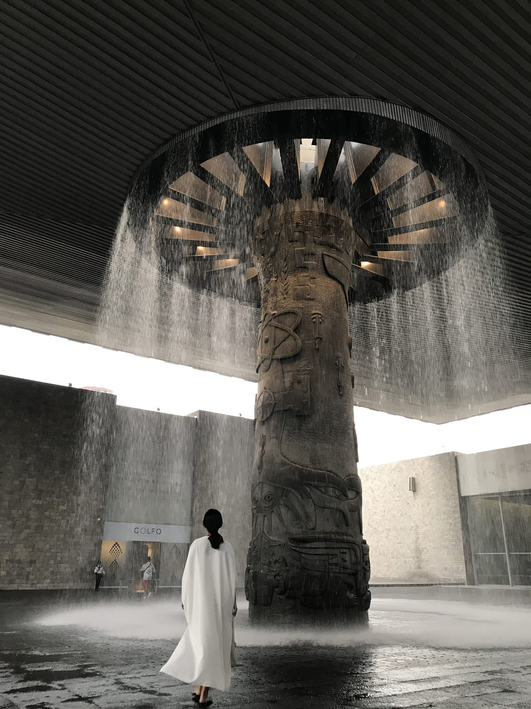
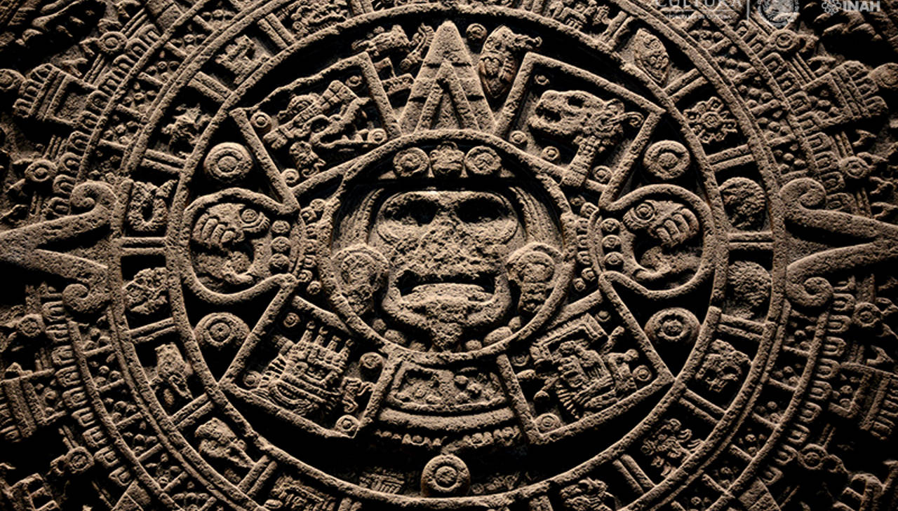
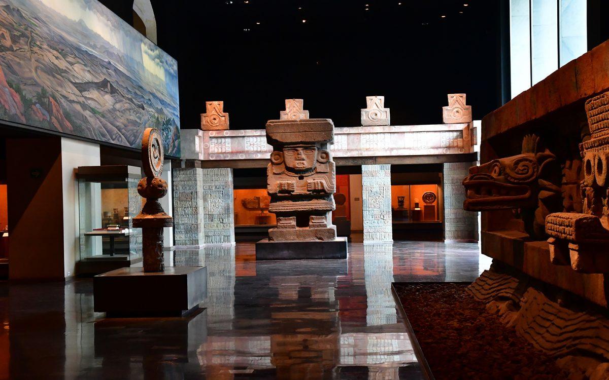

Explora la Historia

Colecciones Fascinantes
 Arte y Cultura
Arte y Cultura

Conoce las Raíces
Arte y Cultura
Sumérgete en las riquezas de las culturas mexicanas y del mundo en el Museo Nacional de Antropología. Este museo emblemático te invita a explorar la historia, el arte y las tradiciones que han dado forma a la humanidad.
Desde fascinantes exposiciones hasta colecciones artefactos únicos, el Museo de Antropología es una ventana a la diversidad cultural. Únete a nosotros y emprende un viaje en el tiempo y a través de las culturas que han dejado una huella indeleble en la humanidad.
El Museo Nacional de Antropología ofrece una variedad de experiencias educativas y culturales. Aquí algunas sugerencias para aprovechar al máximo tu visita:
fotografías
aprendizaje
arte
exploración en grupo
descanso y cafetería